Digitalizar una empresa equivale a la digitalización coordinada de sus unidades o departamentos. El nombre y número de departamentos de una empresa es una cosa que puede variar, dependiendo del tamaño de la empresa y su función. Veamos los departamentos tradicionales para una empresa de tamaño medio-grande.

Con la transformación digital no solo se han modificado los departamentos existentes, sino que se han creado otros nuevos. Veamos primero cómo ha podido influir la transformación digital en algunos departamentos:
- Departamento Comercial: su objetivo es aumentar las tasas de resolución de dudas o reclamaciones en el primer contacto del cliente con la empresa. Para ello es posible utilizar chatbots basados en IA (con aprendizaje automático o machine learning) para identificar qué está pidiendo el cliente y resolver su problema. De esta manera se acelera el tiempo medio de atención al cliente y mejora la gestión de recursos humanos. Muchas consultas sencillas pueden ser resueltas por un chatbot y las más complejas serán resueltas por un agente. Además se generarán informes de las consultas que no son resueltas por los chatbots para mejorar respuestas en las siguientes ocasiones.
- Recursos humanos: el uso de tecnologías punteras permite el ahorro de tiempo para el personal. Así, éste podrá dedicarse a tareas que añadan valor a la empresa. Además, la disponibilidad podrá ser las 24 horas del día.
- Marketing: el uso de herramientas de análisis que ayuden a entender cómo es la experiencia de compra de los clientes permitirá mejorar las campañas de márketing.
- Finanzas y contabilidad: es uno de los departamentos que más se pueden beneficiar de tecnologías como el blockchain (registro inmutable y en tiempo real de transacciones y propiedad) o la IA, eliminando hasta el 90% de tareas administrativas del departamento con el fin de ganar precisión, bajas costes y lograr un flujo de trabajo más eficiente.
A continuación veamos algunos posibles departamentos que han podido aparecer nuevos en las empresas (algunos pueden estar externalizados):
- Tecnología de la Información (TI): se ocupa de la infraestructura y los sistemas informáticos. Agrupa administradores de sistema, ingenieros de redes, especialistas en seguridad cibernética y técnicos de soporte.
- Desarrollo de software: crea programas y aplicaciones que optimizan la empresa, como desarrollo web, aplicaciones móviles y software personalizado.
- Gestión de datos: se encarga de recopilar, almacenar y gestionar la información de la empresa. Incluye analistas de datos y administradores de bases de datos.
- Seguridad de la información: protegen los datos y sistemas de la empresa de amenazas cibernéticas, tanto de manera preventiva como reactiva ante incidentes de seguridad.
- Desarrollo web y multimedia: crea y mantiene la presencia en Internet y genera contenidos digitales.
- Soporte técnico: ayuda a los empleados con problemas tecnológicos y brinda asistencia para resolver problemas de hardware y software.
- Innovación y Estrategia Digital: identifica oportunidades para aprovechar nuevas tecnologías y tendencias digitales para mejorar la eficiencia de la empresa.